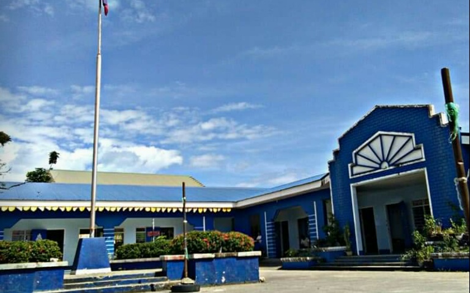

k.s.v.com

San Jose National Highschool
Address: Brgy. 87, Manlurip, San Jose, Tacloban City
Geographical Coordinates:
Imcumbent Principal: FLORDELIS N. TABARANZA
Article XIV, Section 1 of the 1987 Philippine Constitution
provides that "the state shall protect and promote the right
of all citezens to quality education at all levels and shall take appropriate steps to make education accessible to all."Thus, the first step toward the formation of secondary education rose in the southern part of Tacloban. The present SAN JOSE NATIONAL HIGHSCHOOL, originally named
SAN JOSE BARIO HIGHSCHOOL was born in the heart of barangay San jose in 1971.
The opening of SAN JOSE NATIONAL HIGHSCHOOL was realized through the noble of the two San Jose Elementary Teachers, Mrs. Alejandra Villamor and Mrs. Apolonia Pretencio. They requested the barrio council of San Jose Headed by brgy. Captain Precsilo Roa for opening of the school. A resolution was then passed to the city government.
Consequently, the school formally opened using the facilities of San Jose National Highschool campus under the administration of the Elementary Principal Mrs. Catalina Mariano. It started with its operation with the two first year classes with an enrollment of eighty-one students, two provisional teachers, and three part-time teachers where: Mrs. Stella Biatrez Pertilos and Ms. Florentina Basiano. The part-time teachers where: Mrs. Teodora Triumpo, Mr. Vicente Quintero and Mrs. Apolinaria Sabusap.
The School offers the secondary educational needs of all the barangays in San jose including its neighboring barangays in Sagkahan, Marasbaras, Calanipawan, Caibaan, V&G Subd., and even some barangays in Palo (Candahug, Baras, Guindapunan and Pawing) and Samar.
The school eventually outgrew its base creating a second year class composed of thirty-seven students SY. 1972-1973.
In June 1973, something inauspicious happened to the school, for it was temporarily closed due to lack of funds. In as much as the barangay residents clamour for education, it was re-opened on August 3, 1973, through the initiative of Brgy. Captain Alberto Elias and his council, local residents, and GPTA officers. During this period, the school was run by Mr. Benustiano Llosa. New teachers were also hired in that year namely: Mrs. Evansuenda Encarnado Rosillo, Mrs. Renalda Llosa, and Mrs. Concordia Salazar.
SY. 1974-1975 is a year to mark; for the school produced the first batch of Thirty-seven graduates under the administration of Mrs. Asuncion Soledad.
In 1976, San Jose Barrio Highschool was converted to San Jose Barangay Highschool in accordance with the City Ordinance, changing bario highschools to barangay highschools. The school carried its name from 1876 to 1981, Mrs. Paz Tiozon took over the leadership of Mrs. Acunsion Soledad and Mrs. Virginia R. Cabuhoy was the last principal as barangay highschool.
A letter of Instruction (LOI) from DECS National Office arrived in 1982 instructing all Barangay High Schools to be converted to National High Schools. With the exertion the GPTA Officers, led by the President Mr. AQUILINO BINGHOY. San Jose Barangay Highschool turned into SAN JOSE NATIONAL HIGHSCHOOL, in 1989 thru CONGRESSMAN CIRILO ROY MONTEJO.
The local government with the counter part from the national government purchase a lot area of 9,985 sq. m. in 1981. The said lot ere formerly owned by the following: Felix Villalino - Title no.: 33672 with 1,010 sq. m. and Title no. 33670 with 980 sq. m.; Lopez and Elena Villalino - Title no.: 33671 with 3,923 sq. m.; and Emelia Tenorio - Title no. 33209 with 4,072 sq. m.
Finally, something remarkable happened to the school because it found new home in 1972. The school rises in a strategic place situated near Tacloban City Airport and the historic landing of Mc Arthur in Palo, Leyte; specifically at brgy. 87, Manlurip, San Jose, Tacloban City. On the new site rose two buildings; and in 1993, Carino Building was built and all highschool classes in San Jose Elementary School were transferred to the new campus.
The school has seen improving under the administration of the first Secondary Prinicipal of the school, Mrs.Teofila E. Santos who,served from 1990 to 1995.
Mrs. Wenifreda M. Renomeron(1996-1988) took the helm of a leadership. She arrived harder to elevate the academic performance of the school as well as the financial status of teachers. The school reaped awards from various divisions, regional and national competitions until the time of the next administrator Mr. Julio N. Paranas (1998 to 2005).
Year 2004, a significant opportunity came. The school was chosen by SEAMEO INNOTECH a pilot school of APEX(Applied Academic for Excellence). Free international trainings and and instructional materials were provided to the school.
Furthermore, City mayor Alfredo T. Romualdez conceptualized and realized the opening of San Jose National High School in 2004. It offers evening classes to indigent working youths and even married individuals. San Jose National Highschool was chosen as a venue for offering classes. It became an independent school at S.Y. 2008 to 2009.
Jane M. Codilan, ED,D. (2006 to 2012) was the fourth principal as national high school ably stirred the school to fame and glory. She raised the academic performance of the school by topping NAT in 2008; the school was luckily chosen as the pilot school of Whole School Approach (WSA) to mastery reading and writing in 2006, several programs and projects were offered for the students welfare; more classrooms stood imposingly; facilities were acquired or installed; and most significantly, teachers were hired and promoted rapidly.
The unity and cooperation among the staff were evident when the school hosted Deped 2007 and 2010 and served as billeting school for Zamboanga Delegation during the 2010 palarong pambansa.
San Jose National High School at 42 years has gone far from the time it was founded. It continue to fulfill its mission of providing quality education to 2,121 students. With the dynamism of the present principal FLORDELIS N. TABARANZA (Principal IV) six Department heads, one Administrative Aide III, 91 teaching staff, active stakeholders such as GPTA, Allumni Association, and Brgy. Officals, SAN JOSE NATIONAL HIGHSCHOOL will keep soaring high. It will continue to provide facilities that home the intelligence, skills and talents of the students, environment that is condicsive for learning, and competent staff who serve as instruments to students life long learning.